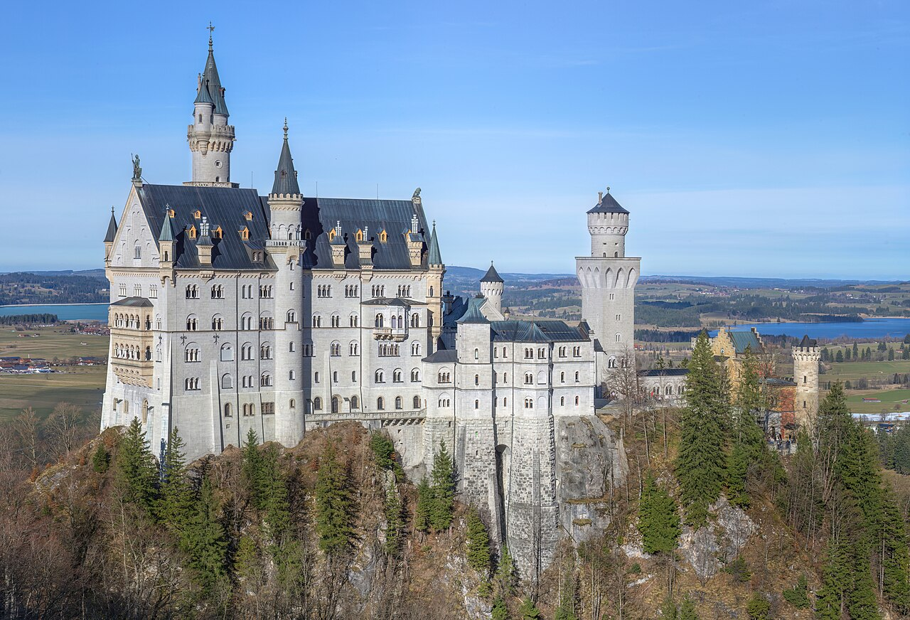

Германия

Германия — про контрасты, и она не делает вид, что это конфликт. Нойшванштайн стоит в альпийском лесу как декорация из сказки — Людвиг II строил его по мотивам Вагнера, и вышло прекрасное безумие; билеты берите за неделю. Берлин — противоположный полюс: остатки Стены на Бернауэр-штрассе, East Side Gallery с граффити вместо бетонных панелей, клубы, куда вы, возможно, не попадёте, — и это по-берлински честный фильтр. Поезда удобны и пунктуальны, хлеб здесь — отдельная цивилизация с сотнями сортов, а летние пивные сады под каштанами — лучший общественный диван Европы. Добавьте Дрезден с восстановленной Фрауэнкирхе — камни разобрали по номерам и сложили обратно, Кёльн с собором, который строили шесть веков, и долину Рейна с замком на каждом изгибе реки. Welcome Card в Берлине окупается на транспорте и музеях. Германия не притворяется безупречной, и от этого отдых идёт без напряжения: всё работает, всё удивляет — и всегда остаётся время на второй бокал.
Что знать перед поездкой
- Neuschwanstein — билеты за неделю
- В Берлине — берите Welcome Card
- Пивные сады — это летом и непременно